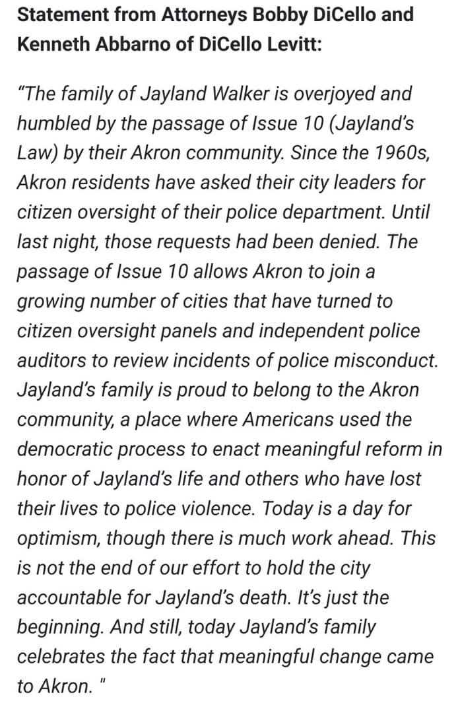

Mobile uploads
This is a statement from Jayland Walker’s family about the passage of Issue 10.
As a person who fights for basic rights of brutalized people, I can tell you that huge wins like this almost never happen.
We all have so much to be proud of and thankful for today in Akron Ohio.
This fills me with so much love and hope.
I love you all so much. You deserve this kind of dignity and respect and so much more.